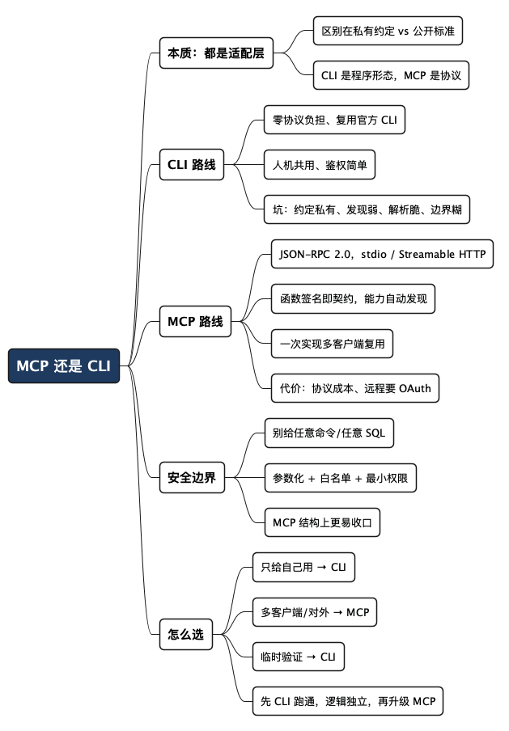

MCP 还是 CLI：AI Agent 到底怎么跟已有服务打通
Posted on 五 17 7月 2026 in AI
| Abstract | MCP 还是 CLI：AI Agent 到底怎么跟已有服务打通 |
|---|---|
| Authors | Walter Fan |
| Category | learning note |
| Version | v1.0 |
| Updated | 2026-07-17 |
| License | CC-BY-NC-ND 4.0 |
MCP 还是 CLI：AI Agent 到底怎么跟已有服务打通
AI Agent 必须要结合 Tools（function call）才有生命力，就像人，再聪明的大脑也要有手脚才能大展身手。企业里大多躺着一堆现成的服务：内部运维平台、财务系统、仓储系统……问题来了——怎么把这些老服务接到 AI Agent 上，让它能真正动手干活？
一旦你动手接，很快就会撞上两条路的岔口：一派主张"必须上 MCP，这是趋势"；另一派主张"我们服务本来就有 CLI，让 Agent 直接调不就完了，折腾 MCP 干嘛"。
这两种声音其实都对，也都不全对——因为这是在拿"协议"和"程序形态"作比较，本身就有点错位。MCP 是一套标准协议，CLI 是一种程序形态，压根不在同一个维度上。但落到"Agent 到底怎么调用你已有服务"这个具体问题上，它们确实是两条可以二选一的路。
这篇文章我想把这两条路摊开讲清楚：技术上到底差在哪，各自的坑在哪，什么场景该选哪个。全程用一个具体例子贯穿——给 Agent 一个"查某个客户最近租了哪些影片"的能力，数据用 MySQL 官方示例库 Sakila（一个 DVD 租赁店的数据集，有 customer、rental、inventory、film 这些表），代码你可以直接抄。
先把结论撂这儿，急的读者看完这句就能走：
对内、单机、你自己控制的 Agent，CLI 又快又稳；对外、要给别人复用、要跨多个客户端的能力，才值得包成 MCP。
- 不是什么：MCP 不是"更高级的 CLI"，CLI 也不是"临时凑合的 MCP"。
- 是什么：两者都是"把已有服务的能力，暴露给 AI 模型去调用"的适配层，区别在这层适配是私有约定还是公开标准。
术语先垫一句：MCP（Model Context Protocol）是 Anthropic 在 2024 年 11 月提出的开放协议，用一套标准让 AI 应用去调用外部工具和数据。CLI（Command Line Interface）就是命令行程序，你在终端里敲
ls、git commit用的就是它。下面会反复用到。
一、先搞清楚：Agent 调用外部能力，本质是什么
不管走哪条路，AI Agent 调外部服务，干的都是同一件事：
- 模型决定"我要调用某个工具"，并给出参数（比如"查一下这个客户最近租了哪些片子"）。
- 有个"胶水层"把这个意图翻译成真正的调用（连数据库、调 SDK、发 HTTP 请求）。
- 服务返回结果，胶水层把结果整理成模型能读的文本，喂回去。
区别只在于第 2 步这个胶水层长什么样、住在哪、用什么协议说话。
- CLI 路线：胶水层是一个命令行程序。Agent 通过执行 shell 命令来调用它，靠标准输出（stdout）拿结果。约定是你自己定的——参数怎么传、输出什么格式，全看你怎么写。
- MCP 路线：胶水层是一个 MCP Server。Agent（作为 MCP Client）通过一套标准协议跟它对话，工具清单、参数 schema、返回结构都有规范。
一句话，CLI 是"我们俩私下约好怎么对接"，MCP 是"按公开标准对接，谁来都能接上"。
准备工作：把 Sakila 装进 MySQL
想跟着跑代码，先花五分钟把 Sakila 数据集灌进本地 MySQL。官方三步走：
-
下载解压。到 MySQL 官方示例库页面 的 "Example Databases" 下找到 Sakila，下 tar 或 zip 包。解压后会得到一个
sakila-db目录，里面有sakila-schema.sql（建表、视图、存储过程）和sakila-data.sql（灌数据）两个文件（还有个sakila.mwb是 Workbench 建模文件，命令行用不上）。 -
建结构 + 灌数据。登进 mysql 客户端，用
SOURCE依次跑这两个脚本——顺序不能反，先建表再灌数据：
console
$ mysql -u root -p
mysql> SOURCE /tmp/sakila-db/sakila-schema.sql;
mysql> SOURCE /tmp/sakila-db/sakila-data.sql;
路径换成你自己解压的位置。Windows 下 SOURCE 里也要用正斜杠 /。
- 验证一下。看看表是不是都在：
console
mysql> USE sakila;
mysql> SHOW FULL TABLES; -- 应能看到 customer / rental / inventory / film 等 20 多张表
给 Agent 用的账号，记得单独建一个只读账号，别拿 root（这条后面第五节会展开）：
CREATE USER 'readonly'@'localhost' IDENTIFIED BY '你的强密码';
GRANT SELECT ON sakila.* TO 'readonly'@'localhost';
装好了，下面的代码就能直接连上跑。
二、CLI 路线：最朴素，也最被低估
先看 CLI，因为它简单到容易被人瞧不上，但很多场景它就是最优解。
假设我们要给 Agent 一个"查某个客户最近租了哪些影片"的能力，数据在 Sakila 库里。它要跨 rental、inventory、film 三张表 join 一下。用 Python 写个 CLI 再自然不过：
# rentaltool.py —— 一个朴素的 CLI
import argparse
import json
import os
import sys
import pymysql
from pymysql.err import MySQLError
# 查询写死，参数化；跨 rental -> inventory -> film 三表 join
SQL = """
SELECT r.rental_id, f.title, r.rental_date, r.return_date
FROM rental r
JOIN inventory i ON r.inventory_id = i.inventory_id
JOIN film f ON i.film_id = f.film_id
WHERE r.customer_id = %s
ORDER BY r.rental_date DESC
LIMIT %s
"""
def recent_rentals(customer_id: int, limit: int = 20) -> int:
"""查某个客户最近租的影片，以 JSON 打到 stdout。"""
limit = max(1, min(limit, 100)) # 边界收紧，别信外面给的值
try:
conn = pymysql.connect(
host=os.environ["DB_HOST"],
user=os.environ["DB_USER"],
password=os.environ["DB_PASSWORD"], # 密钥从环境变量取，不写死
database=os.environ.get("DB_NAME", "sakila"),
cursorclass=pymysql.cursors.DictCursor,
)
with conn.cursor() as cur:
cur.execute(SQL, (customer_id, limit)) # 参数化，杜绝 SQL 注入
rows = cur.fetchall()
except MySQLError as e:
# 错误走 stderr，别污染 stdout 的结构化输出
print(f"error: {e}", file=sys.stderr)
return 1
# 关键：给 Agent 的输出要结构化、可解析
print(json.dumps({"rentals": rows}, ensure_ascii=False, default=str))
return 0
def main() -> int:
parser = argparse.ArgumentParser(prog="rentaltool")
sub = parser.add_subparsers(dest="cmd", required=True)
p = sub.add_parser("rentals", help="recent rentals of a customer")
p.add_argument("--customer-id", type=int, required=True)
p.add_argument("--limit", type=int, default=20)
args = parser.parse_args()
if args.cmd == "rentals":
return recent_rentals(args.customer_id, args.limit)
return 2
if __name__ == "__main__":
raise SystemExit(main())
Agent 怎么用它？大多数会写代码的 Agent 框架都支持"执行 shell 命令"这个动作。它会去跑：
$ python rentaltool.py rentals --customer-id 1 --limit 3
{"rentals": [{"rental_id": 12312, "title": "ACADEMY DINOSAUR", "rental_date": "2005-08-22 20:03:46", "return_date": "2005-08-28 22:24:46"}, ...]}
就这么点东西，一个能力就通了。注意这里有个关键取舍：我没让 Agent 自己写 SQL，而是只给它一个 rentals 子命令，参数就 customer-id 和 limit。SQL 是我写死的、参数化的。为什么这么干，第五节细说。
CLI 路线的几个真实优点：
- 零协议负担：不用起服务、不用管连接池、不用学 JSON-RPC。写个脚本就能跑。
- 复用你已有的一切：很多服务本身就有官方 CLI（
mysql、aws、gcloud、kubectl）。Agent 直接调这些成熟工具，你一行胶水都不用写。 - 人和机器共用：你自己在终端里也能敲同一条命令来调试，出了问题人肉复现特别快。
- 鉴权简单：直接吃环境变量、
~/.my.cnf、IAM Role，跟你平时用 CLI 一模一样，不用另造一套。
但 CLI 的坑也很实在：
- 约定是私有的：参数怎么传、输出什么格式，全靠你在提示词里跟 Agent"口头约定"。换个 Agent、换个模型，可能就得重新调教。
- 发现能力弱：Agent 不知道你这个 CLI 有哪些子命令、每个参数啥意思，除非你把
--help也喂给它，或者在 system prompt 里写清楚。 - 输出解析脆：一旦输出不是严格结构化（掺了进度条、警告、彩色转义符），模型解析就容易翻车。所以上面例子里我特意让结果走 stdout、错误走 stderr、结果一律 JSON。
- 安全边界糊：给 Agent "执行任意 shell" 的权限，相当于给了它一把瑞士军刀。它想跑
rentaltool.py，也能跑rm -rf。这个后面单独说。
三、MCP 路线：把能力包成"标准接口"
MCP 的核心价值，是把"Agent 怎么调你的工具"这件事标准化了。
按官方规范（当前版本 2025-06-18），MCP 用 JSON-RPC 2.0 编码消息，定义了两种标准传输方式：
- stdio：Client 把 Server 当子进程拉起来，通过标准输入输出通信。适合本地工具。
- Streamable HTTP：Server 是独立进程，走 HTTP（可选配 SSE 做流式推送）。适合远程部署、多客户端。
（顺带说一句，早期规范里的 HTTP+SSE 已经被 Streamable HTTP 取代了，新写的东西直接用后者。）
同样是"查客户最近租的影片"，用官方 Python SDK 写成 MCP Server 长这样：
# rental_mcp_server.py —— 一个 MCP Server
import os
import pymysql
from pymysql.err import MySQLError
from mcp.server.fastmcp import FastMCP
mcp = FastMCP("sakila-tools")
SQL = """
SELECT r.rental_id, f.title, r.rental_date, r.return_date
FROM rental r
JOIN inventory i ON r.inventory_id = i.inventory_id
JOIN film f ON i.film_id = f.film_id
WHERE r.customer_id = %s
ORDER BY r.rental_date DESC
LIMIT %s
"""
def _connect():
return pymysql.connect(
host=os.environ["DB_HOST"],
user=os.environ["DB_USER"],
password=os.environ["DB_PASSWORD"],
database=os.environ.get("DB_NAME", "sakila"),
cursorclass=pymysql.cursors.DictCursor,
)
@mcp.tool()
def recent_rentals(customer_id: int, limit: int = 20) -> dict:
"""Get a Sakila customer's most recent film rentals.
Args:
customer_id: The customer's numeric id.
limit: Max number of rentals to return (1-100).
"""
limit = max(1, min(limit, 100))
try:
conn = _connect()
with conn.cursor() as cur:
cur.execute(SQL, (customer_id, limit)) # 参数化，杜绝 SQL 注入
rows = cur.fetchall()
except MySQLError as e:
# MCP 里错误也走标准结构，客户端能识别
raise RuntimeError(f"DB error: {e}") from e
return {
"rentals": [
{**r, "rental_date": str(r["rental_date"]),
"return_date": str(r["return_date"])}
for r in rows
]
}
if __name__ == "__main__":
# 本地用 stdio；远程部署可换成 streamable-http
mcp.run(transport="stdio")
注意几个关键差异：
- 函数签名就是接口契约。
@mcp.tool()会自动把类型注解和 docstring 转成 JSON Schema，暴露给客户端。Agent 一连上来，就知道有个recent_rentals工具、要传customer_id和limit、各是什么类型、干什么用的——这就是 CLI 缺的"能力发现"。 - 协议帮你兜了很多事：参数校验、错误结构、返回格式，都有规范托底，不靠你在提示词里手写约定。
- 一次实现，多处复用。Claude Desktop、Cursor、你自己写的 Agent，只要是 MCP Client，都能直接接上同一个 Server，不用各调各的。
客户端配置（以 stdio 为例）通常是一段 JSON：
{
"mcpServers": {
"sakila-tools": {
"command": "python",
"args": ["rental_mcp_server.py"],
"env": {
"DB_HOST": "127.0.0.1",
"DB_USER": "readonly",
"DB_NAME": "sakila"
}
}
}
}
如果要给团队甚至外部用，就把它部署成 Streamable HTTP 服务：
# 远程部署：把最后一行换掉
if __name__ == "__main__":
mcp.run(transport="streamable-http") # 对外暴露 /mcp 端点
这时候它就是一个标准 Web 服务了，跑在 https://your-host/mcp 上，谁的 MCP Client 都能连。当然，代价是你要自己扛起 HTTPS、鉴权（规范推荐 OAuth 2.1）、CORS、会话管理这一整套——这部分复杂度，CLI 路线是完全没有的。
四、正面硬刚：一张表看清区别
一句话引出这张表要解决的问题：同一个能力，两种包法，到底差在哪些维度上，值不值得多花那份功夫。
| 维度 | CLI 路线 | MCP 路线 |
|---|---|---|
| 本质 | 私有约定的命令行程序 | 公开标准协议（JSON-RPC 2.0） |
| 通信方式 | shell 执行 + stdout/stderr | stdio 或 Streamable HTTP |
| 能力发现 | 弱，靠 --help 或提示词 |
强，schema 自动暴露给客户端 |
| 参数校验 | 自己写 argparse | 协议 + 类型注解自动生成 |
| 跨客户端复用 | 差，换 Agent 常要重调 | 好，任何 MCP Client 即插即用 |
| 上手成本 | 极低，会写脚本就行 | 中，要学协议和 SDK |
| 远程/多用户 | 要自己造轮子 | 协议原生支持 |
| 鉴权 | 复用现成（IAM、env） | 本地简单；远程要上 OAuth 等 |
| 调试 | 人可直接敲命令复现 | 需要 MCP inspector 等工具 |
| 流式/进度 | 不天然支持 | Streamable HTTP 原生支持 SSE |
| 安全边界 | 糊（易变成"执行任意命令"） | 清晰（一个工具一个显式入口） |
把表讲活一点：这就像你家水管漏了。
CLI 好比你自己拿扳手上手拧——工具就在手边，你熟，几分钟搞定，不用请人。MCP 好比你把水管接口全部换成标准规格的快接头：第一次改造要花钱花时间，但以后不管来的是谁家的水管工、带的是谁家的工具，接上就能用。
自己家、自己修、修一次，扳手就够了。要开个连锁维修店、让不同师傅都能上手，才值得上标准接口。
五、被忽略的重点：安全边界差得远
这一节我想单独拎出来，因为选型时最容易被忽略，翻车了却最疼。
还拿前面 Sakila 那几张表说事。假设要给 Agent "查客户租片记录"的能力。
CLI 路线如果图省事，很可能变成"让 Agent 自己拼 SQL 去跑 mysql"：
# 危险示范：把 SQL 拼接权交给模型
$ mysql -e "SELECT * FROM rental WHERE customer_id = $user_input"
这就埋雷了——模型（或者被诱导的模型）完全可以拼出 1 OR 1=1; DROP TABLE rental;--。你等于把一个 SQL 注入漏洞的钥匙，直接交给了一个概率模型。
正确的做法，前面两段代码其实已经示范了：别暴露"任意 SQL"，只暴露 recent_rentals(customer_id, limit) 这一个收窄好的动作，SQL 写死并参数化。 无论包成 CLI 还是 MCP，这一层收口都是一样的——
# 收口的关键就这两点
limit = max(1, min(limit, 100)) # 参数限界，别信模型给的值
cur.execute(
"SELECT r.rental_id, f.title, r.rental_date FROM rental r "
"JOIN inventory i ON r.inventory_id = i.inventory_id "
"JOIN film f ON i.film_id = f.film_id "
"WHERE r.customer_id = %s ORDER BY r.rental_date DESC LIMIT %s",
(customer_id, limit), # 参数化占位符，杜绝注入
)
这里 MCP 有个结构性优势：它天然引导你"一个工具 = 一个明确动作 = 一组带类型的参数"，你很难顺手就暴露一个"执行任意命令"的口子。而 CLI 路线如果偷懒给了 Agent 一个通用 shell，边界就非常容易失守。
几条不管选哪条路都要守的红线：
- 不给模型"执行任意命令/任意 SQL"的能力，只暴露收窄后的具体动作。
- 参数一律校验和限界：类型、范围、白名单，别信模型给的值。
- 最小权限：给 Agent 用的数据库账号就配只读、只授权必要的库和表，别拿 root 或管理员账号。
- 密钥不进代码、不进日志：从环境变量或密钥服务取，日志里该脱敏的脱敏。
- 高危动作要二次确认：删除、重启、转账这类，加一道人工确认或审批。
这不是危言耸听。开源界就有一个"教科书级"的翻车案例，而且翻车的还是 MCP 的"亲爹"。
Anthropic 官方的 Postgres MCP 参考实现，就栽在 SQL 注入上。 这个 server 号称"只读"——它把每个查询包进一个只读事务里：
BEGIN TRANSACTION READ ONLY;
[模型给的查询]
ROLLBACK;
看起来滴水不漏，对吧？问题在于 Node.js 的 postgres 客户端允许一次执行多条分号分隔的语句。于是模型（或诱导模型的攻击者）只要拼一句：
COMMIT; DROP SCHEMA public CASCADE;
前面那个 COMMIT 直接把只读事务提交结束，后面的语句就在没有任何限制的新事务里跑了——"只读"防线形同虚设。这个洞 2025 年 4 月被 Datadog Security Labs 报出来，官方随后在 5 月归档、7 月 10 日正式废弃了这个参考实现（Datadog 的分析）。类似的坑，后来在 AWS Aurora DSQL、Apache Doris 等一票数据库 MCP server 上又反复上演。
这案例的启发很扎心：
- "只读"如果只是一层字符串检查或事务包装，往往不是真的安全边界。 真正靠谱的，是像我们前面那样只暴露收窄好的具体动作（
recent_rentals），SQL 写死，压根不给模型拼 SQL 的机会。 - 把"任意 SQL"这种通用能力暴露给模型，等于把攻击面直接送出去。 能力越通用，越难防住。
- 连发明 MCP 的团队都会踩这个坑，说明它不是"新手才犯的错"，而是这类设计的结构性陷阱——所以上面那几条红线，不是纸上谈兵。
六、那到底怎么选？一套判断流程
不必非黑即白。可以按这个顺序一路问下来：
-
这个能力，只给我自己/我们这一个 Agent 用吗？ 是 → 强烈倾向 CLI。尤其服务本身已有官方 CLI（
aws、gcloud、kubectl），直接调，别造轮子。 -
要不要给多个客户端复用？（Claude Desktop、Cursor、同事的 Agent……） 要 → 倾向 MCP。一次实现、处处能接，这正是它的主场。
-
要不要远程、多用户、带鉴权地对外提供？ 要 → MCP 的 Streamable HTTP 基本是标准答案，协议帮你把会话、流式、鉴权的框架搭好了。
-
能力会不会持续演进、需要清晰的接口契约？ 会 → MCP。schema 即文档，加工具、改参数都有规范可循，比维护一堆提示词约定省心。
-
只是临时验证一下想法？ 是 → CLI。半小时能跑通的东西，别上来就折腾协议。
一句话总结：
CLI 是"够用就好"的私人扳手，MCP 是"要开店"才装的标准接口。 先用 CLI 把能力和边界跑通，等真出现"多客户端复用/对外提供"的需求，再升级成 MCP 也不迟——反正收窄好的那层业务逻辑，两边是能共用的。
最后一句
回到开头那个岔口。如果让我给一个"默认动作"，那就是：先用 CLI 把能力跑通——尤其当服务本来就有 CLI 的时候，接起来最快；关键是把每个动作的业务逻辑（参数校验、权限收窄）写成独立函数，别和"命令行解析"这层耦死。这样等哪天真要开放给别的团队、要多客户端复用，外面套一层 MCP Server 就行，里面的核心逻辑一行不用改。
技术选型这事儿，最怕的不是选错，而是为了"显得先进"而选。MCP 是好东西，但它解决的是"标准化"和"复用"的问题；如果你压根没有这两个问题，那份协议复杂度就是纯成本。
老话说，杀鸡焉用牛刀。反过来，真要开肉联厂，也别只拿把水果刀死撑。先看你要杀的是一只鸡，还是一头牛。
全文思维导图
@startmindmap
<style>
mindmapDiagram {
node {
BackgroundColor #F8F9FA
RoundCorner 10
Padding 10
FontSize 13
}
:depth(0) {
BackgroundColor #1E3A5F
FontColor white
FontSize 18
FontStyle bold
}
:depth(1) {
FontSize 15
FontStyle bold
}
:depth(2) {
FontSize 13
}
}
</style>
* MCP 还是 CLI
** 本质：都是适配层
*** 区别在私有约定 vs 公开标准
*** CLI 是程序形态，MCP 是协议
** CLI 路线
*** 零协议负担、复用官方 CLI
*** 人机共用、鉴权简单
*** 坑：约定私有、发现弱、解析脆、边界糊
** MCP 路线
*** JSON-RPC 2.0，stdio / Streamable HTTP
*** 函数签名即契约，能力自动发现
*** 一次实现多客户端复用
*** 代价：协议成本、远程要 OAuth
** 安全边界
*** 别给任意命令/任意 SQL
*** 参数化 + 白名单 + 最小权限
*** MCP 结构上更易收口
** 怎么选
*** 只给自己用 → CLI
*** 多客户端/对外 → MCP
*** 临时验证 → CLI
*** 先 CLI 跑通，逻辑独立，再升级 MCP
@endmindmap

本作品采用知识共享署名-非商业性使用-禁止演绎 4.0 国际许可协议进行许可。 欢迎在我的个人网站 https://www.fanyamin.com 访问原文并评论。